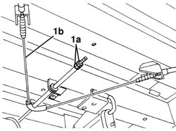
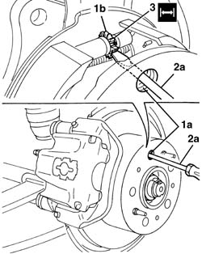
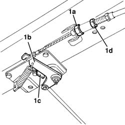
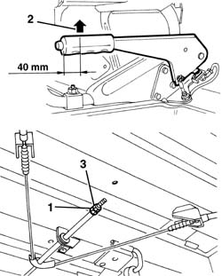
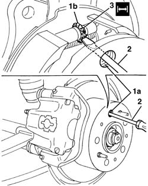

3380A04 HANDBRAKE - CHECK TRAVEL
- Path
- Procedures > 33 BRAKING SYSTEM > 3380 HANDBRAKE > 3380A HANDBRAKE CONTROL AND LINKAGE > 3380A04 HANDBRAKE - CHECK TRAVEL
- Kind
- repair procedure (removal / refitting; the operation number is the code)
- Applies to
- all engines; all production periods
- Interactive page
- https://sloeber94.github.io/elrnDB-fDct/en/#/244001146
Applies to: all engines; all production periods
Position the vehicle on the lift.
Remove both the rear wheels.
1. Working underneath the vehicle, loosen the handbrake adjustment nuts (1a), until the cable (1b) is slack.

Applies to: all engines; all production periods
Carry out the following three stages on both sides of the vehicle.
1. Rotate the brake disc manually until one of the openings (1a) is in line with the toothed pin (1b) for the clearance recovery device.
2. Insert a screwdriver (2a) and, with the assistance of an electric torch, rotate the toothed pin upwards until the end of travel position (a condition in which the shoes are touching the brake drum).
3. Rotate the toothed pin (1b) by about 10 teeth in the opposite direction (downwards). This operation allows the correct clearance between the shoes and the drum to be re-established (the rotation of one of the teeth for the clearance recovery device toothed pin corresponds to a variation of 0.035 mm in the shoe diameter).
Subject | Value | |
|---|---|---|
3 | Rear shoe adjustment device (Clearance between shoes and drum) | mm 0.30 - 0.65 |

Applies to: all engines; all production periods
1. With the handbrake lever in the rest position, work underneath the vehicle and tighten the adjustment nut (1a) until the lever (1b) slowly becomes detached from the end of travel position on the bracket (1c); then lock the locknut (1d).

Applies to: all engines; all production periods
Place the handbrake lever at the third notch starting from the rest position.
1. Working underneath the vehicle, tighten the adjustment nut.
Value - daNm | Fastening | Component | Ø | |
|---|---|---|---|---|
1 | 0.25 | Nut | HANDBRAKE CABLE ADJUSTMENT DEVICE | - |
2. Check that when the handbrake lever is at the fourth notch the load on the grip is about 25 Kg, otherwise adjust the adjustment nut (1a) until the load is correct.
3. Tighten the locknut.

Applies to: all engines; all production periods
Refit the rear wheels.
Remove the vehicle from the lift.
Check that the handbrake is working.
Applies to: all engines; all production periods
Position the vehicle on the lift.
Remove both the rear wheels.
1. Working underneath the vehicle, loosen the handbrake adjustment nuts (1a), until the cable (1b) is slack.
Applies to: all engines; all production periods
1. With the handbrake lever in the rest position, work underneath the vehicle and tighten the adjustment nut (1a) until the lever (1b) slowly becomes detached from the end of travel position on the bracket (1c); then lock the locknut (1d).
Applies to: all engines; all production periods
Place the handbrake lever at the third notch starting from the rest position.
1. Working underneath the vehicle, tighten the adjustment nut.
Value - daNm | Fastening | Component | Ø | |
|---|---|---|---|---|
1 | 0.25 | Nut | HANDBRAKE CABLE ADJUSTMENT DEVICE | - |
2. Check that when the handbrake lever is at the fourth notch the load on the grip is about 25 Kg, otherwise adjust the adjustment nut (1a) until the load is correct.
3. Tighten the locknut.
Applies to: all engines; all production periods
Refit the rear wheels.
Remove the vehicle from the lift.
Check that the handbrake is working.
Applies to: all engines; all production periods; only with equipment: Disc brakes
- Position the vehicle on the lift.
- Remove both the rear wheels
1. Working underneath the vehicle, loosen the handbrake adjustment nuts (1a), until the cable (1b) is slack.
Applies to: all engines; all production periods; only with equipment: Disc brakes
- Carry out the following three stages on both sides of the vehicle.
1. Rotate the brake disc manually until one of the openings (1a) is in line with the toothed pin (1b) for the clearance recovery device.
2. Insert a screwdriver and, with the assistance of an electric torch, rotate the toothed pin upwards until the end of travel position (a condition in which the shoes are touching the brake drum).
3. Rotate the toothed wheel (1b) by about 5 teeth in the opposite direction (downwards). This operation makes it possible to re-establish the recommended clearance between the shoes and the drum (the rotation of five teeth of the adjustment wheel corresponds to a variation in the shoe diameter of 0.15 mm). The disc thereby rotates without sticking but can produce a certain resistance.
Subject | Value | |
|---|---|---|
3 | Clearance between shoes and drum | mm 0.15 |

Applies to: all engines; all production periods; only with equipment: Disc brakes
1. With the handbrake lever in the rest position, work underneath the vehicle and tighten the adjustment nut (1a) until the lever (1b) slowly becomes detached from the end of travel position on the bracket (1c); then lock the locknut (1d).
Applies to: all engines; all production periods; only with equipment: Disc brakes
- Place the handbrake lever at the third notch starting from the rest position.
1. Working underneath the vehicle, tighten the adjustment nut.
Value - daNm | Fastening | Component | Ø | |
|---|---|---|---|---|
1 | 0.25 | nut |
2. Check that when the handbrake lever is at the fourth notch the load on the grip is about 33 Kg, otherwise adjust the adjustment nut (1a) until the load is correct.
3. Tighten the locknut.
Applies to: all engines; all production periods; only with equipment: Disc brakes
- Refit the rear wheels
- Remove the vehicle from the lift.
- Check that the handbrake is working.
Topics that link to this page (11)
- 1076B10 EXHAUST PIPE ASSEMBLY - R + R
- 1076B20 REAR EXHAUST SILENCER - R + R
- 2720D10 SEMISHAFT WITH LEFT OR RIGHT JOINT (ONE) - R.R.
- 3380A10 HANDBRAKE LEVER - R+R
- 3380A30 HANDBRAKE CABLE - R+R
- 3380A31 HANDBRAKE CABLE INTERMEDIATE SECTION - R.R.
- 3380A33 HANDBRAKE CABLE REAR SECTION (ONE) - R.R.
- 3380A40 LINKAGE SUPPORTS AND IDLERS - R+R
- 3380A42 HANDBRAKE LINKAGE SUPPORTS AND IDLERS - R.R.
- 3380C41 REAR WHEEL BRAKE BACK PLATE - R.R.
- 4450D18 REAR WHEEL STUB AXLE - R.& R.